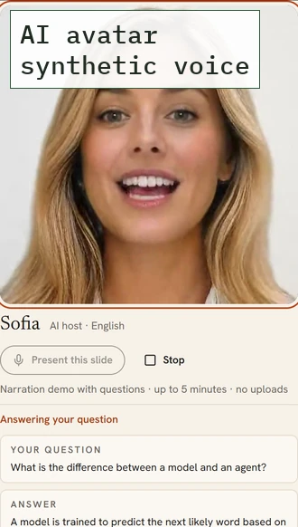

Live
Oz Radio: an AI presenter for any deck
An avatar presents your deck live, stops for a spoken question, and answers from the slides it cites.
Live demo · capped daily

The five building blocks of enterprise agents
I'm Ozgur, an AI solution engineer. I build and test the five things that surround the model, in the open: each block below has a sample you can open.
01 · How people ask
Voice is becoming the way we talk to agents.
Speaking is faster than typing: customers call voice agents, and developers talk to their coding agents. A voice agent must listen, act, and know when to hand over to a person.

An avatar presents your deck live, stops for a spoken question, and answers from the slides it cites.
Live demo · capped daily
Present, narrate or podcast, in 10+ languages.
The whole 6:19 call, French with English subtitles.
Voice Live, Azure Communication Services and Foundry.
02 · Where people find it
Bring agents to where people already work.
An agent nobody finds is an agent nobody uses. Build it once, publish it in Teams and Microsoft 365 Copilot, and keep the same identity and governance behind every channel.
Its approvals reach a person in Teams.
Experiences on top: where people meet their agents.
03 · What it knows and can do
An agent is only as good as the company knowledge it can reach.
Bring company knowledge to the agent in three ways: MCP servers for workflows and data in Salesforce, ServiceNow or SAP; knowledge bases; and retrieval (RAG) over documents. Each trades freshness, cost and control differently.
Company documents become a wiki people can browse and agents can trust; its agent's changes wait for a person's approval.
Live demo · fictional corpus · open source · work page
Coding agents read and write a linked Markdown wiki, so project knowledge persists.
Developer knowledge pattern · GitHub repository
Three generic tools cover ServiceNow's data model.
An order workflow through MuleSoft MCP and A2A.
Foundry agents and MCP on Azure Container Apps.
04 · Whose rights it uses
The agent acts as the person who asked.
Identity runs through every layer. The user's identity travels from the voice to Salesforce or ServiceNow, so each system applies the rules it already has, instead of middleware rebuilding them behind one service account.
The signed-in user in Salesforce and ServiceNow.
Browser to backend through MCP, no service account.
These samples are not audited production guarantees. Read the evaluation boundaries before adapting a pattern.
05 · Who sets the rules
Every agent, tool and skill needs an owner and a rule.
Governance applies at every layer: which channels, data and skills each agent gets, where a person must decide, and, for agents that code or browse, a sandbox per session rather than a shared server.
Each session gets its own sandbox: workspace, terminal and browser checks.
Experimental community sample · project site
Experiences on top, a computer per agent, one governance across them.
Interactive presentation · 9-slide deck
Approval flow source: a person decides in Teams.
Read the limitations before evaluating it.
A delivery harness with human checkpoints.
Next, not covered here yet: cost control and the value of each token.
About
I'm Ozgur Karahan, an AI solution engineer at Microsoft. For more than fifteen years I have worked on software, cloud and AI with large enterprises. I speak about the five building blocks of enterprise agents in English, French and Turkish, so far in customer and internal sessions; the Agentic Platform deck is a sample. To invite me to a talk or a panel, message me on LinkedIn.
New samples and notes go out on LinkedIn. To invite me to a talk or a panel on the five building blocks, message me there.